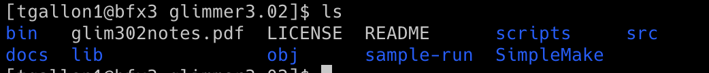

Python Computer Gateway Interface (CGI) Programming
HTML Template
GenBank Reference Annotation vs. Glimmer3
Glimmer was used to predict the genes of a plasmid of the model organism Escherichia coli O157:H7 str. Sakai plasmid pO157 DNA, and the results were then compared with the annotations from GenBank. A CGI script was used to read both the GenBank (reference) annotation and predicted output from Glimmer, and the results were populated in an HTML5-compliant template.
The output includes summary information at the top, including the count of genes in the reference annotation, the count of predicted genes, the count of genes with exact matching coordinates between reference and prediction (5' and 3' agreement), the count of genes with 5' agreement but 3' disagreement, the count of genes with 5' disagreement but 3' agreement, and the count of genes predicted with no overlap to a reference gene. Additionally, a table is displayed showing all gene coordinates of the reference annotation and the corresponding (overlapping) predicted coordinates. Attributes of 'agrees' or 'disagrees' are applied when compared to the reference coordinates, and a consensus field is generated.
Escherichia coli O157:H7 str. Sakai plasmid pO157 DNA, complete sequence: AB011549.2Glimmer (Gene Locator and Interpolated Markov ModelER) is a Unix-based program used to locate bacterial genes with 99% sensitivity (1). Glimmer identifies coding sequences using interpolated Markov models (IMMs), which make predictions based on a linear combination of probabilities from oligomers of varying lengths. In general, longer oligomers have higher predictive value if sufficient data is available. Glimmer uses Markov models from the 1st through 8th orders and assesses which order to use based on oligomer frequency, giving a higher weight to frequently occurring oligomers. Glimmer uses longer oligomers when possible and creates IMMs for the possible reading frames, which are then used to score orfs and determine coding sequences. Glimmer's use of IMM is advantageous over other programs, such as GeneMark, which uses a fixed-order Markov model. GenMark uses a 5th-order Markov model, predicting nucleotides based on the five previous ones, and may result in unreliable predictions if the 5mer does not frequently occur (2).
The Glimmer3 system was downloaded, and the file was decompressed using the following command: tar xzf glimmer302b.tar.gz
Running the command above creates a directory called glimmer3.02
 The glim302notes.pdf file contains the documentation for running Glimmer.Commands used to run glimmer3
long-orfs -n -t 1.15 AB011549_seq.fasta AB011549_seq.longorfs
extract -t AB011549_seq.fasta AB011549_seq.longorfs > AB011549_seq.train
build-icm -r AB011549_seq.icm < AB011549_seq.train
glimmer3 -o50 -g110 -t30 AB011549_seq.fasta AB011549_seq.icm AB011549_seq

extract -t AB011549_seq.fasta AB011549_seq.predict > AB011549_seq.glimmer
Explanation
Command 1: long-orfs -n -t 1.15 AB011549_seq.fasta AB011549_seq.longorfs
The long-orfs command reads a DNA sequence from a file and provides the coordinates of the long, non-overlapping open reading frames using an amino-acid distribution model. The output can be saved to a separate file or printed to the console. The orfs in the longorfs file are likely to contain genes and can be used as a training set for the build-icm program. The AB011549_seq.fasta was used for this prediction.
It is used as long-orfs [options] <sequence-file> <output-file>
Parameters:
-n (--no_header): Does not include headers in the output
-t 1.15 (--cutoff <x>): Only genes with entropy distance score less than 1.15 will be considered
Output (first ten rows; a total of 42 orfs were identified): AB011549_seq.longorfs

Command 2: extract -t AB011549_seq.fasta AB011549_seq.longorfs > AB011549_seq.train
The extract program reads a DNA sequence from a file and takes coordinates to output a file containing FASTA sequences of the specified regions.
It is used as extract [options] <sequence-file> <coords>
Parameters:
-t (--nostop): Omit the last 3 characters of each output string
Output: AB011549_seq.train

Command 3: build-icm -r AB011549_seq.icm < AB011549_seq.train
The build-icm program constructs a probability model called interpolated context model (ICM) from a set of sequences.
It is used as build-icm [options] output_file < input_file
Parameters:
-r (--reverse): Use the reverse of input strings to build the ICM model.
Output: AB011549_seq.icm

Command 4: glimmer3 -o50 -g110 -t30 AB011549_seq.fasta AB011549_seq.icm AB011549_seq
The glimmer3 program makes gene predictions based on DNA sequences and the ICM model.
It is used as glimmer3 [options] <sequence-file> <icm-file> <tag>
Parameters:
-o50 (--max_olap <n>): Set maximum overlap length to 50.
-g110 (--gene_len <n>): Set minimum gene length to 110.
-t30 (--threshold <n>): Set threshold score for calling as gene to 30.
Output (first ten rows): AB011549_seq.predict

Output: AB011549_seq.detail
Command 5: extract -t AB011549_seq.fasta AB011549_seq.predict > AB011549_seq.glimmer
Output: AB011549_seq.glimmer
Summary
The GenBank annotation for the Escherichia coli O157:H7 str. Sakai plasmid pO157 contained records for 83 genes, 2 of which were not provided CDS locations. Glimmer3 predicted 107 genes. Overall, Glimmer3 predicted 51 genes matching both 5'UTR and 3'UTR locations and 23 genes matching only the 3'UTR location as annotated by GenBank. There were no predictions matching only the 5'UTR location.
A total of 9 genes did not match Glimmer3 predictions. Given CDS locations were not provided for two genes in the GenBank annotation, 92% of GenBank genes had at least one matching region with the genes predicted by Glimmer3. In addition to matching CDS locations, 3 GenBank genes also had overlapping regions with genes predicted by Glimmer. Summary tables of the 3 reference genes with matches and overlapping regions are included below.
A total of 33 additional genes were predicted by Glimmer3 that did not match the GenBank reference annotation. Only 69% of the genes predicted by Glimmer3 had at least one matching location to the reference annotation. Given 3 had overlapping regions with reference genes, 72% of all genes predicted by Glimmer had at least one matching region or overlapping region.
References:
- Delcher, A. L., Bratke, K. A., Powers, E. C., & Salzberg, S. L. (2007). Identifying bacterial genes and endosymbiont DNA with Glimmer. Bioinformatics (Oxford, England), 23(6), 673–679.https://doi.org/10.1093/bioinformatics/btm009
- Salzberg, S. L., Delcher, A. L., Kasif, S., & White, O. (1998). Microbial gene identification using interpolated Markov models. Nucleic acids research, 26(2), 544–548.https://doi.org/10.1093/nar/26.2.544
- Delcher, A. L. (2006, May 9). Glimmer Release Notes Version 3.02. Retrieved from https://ccb.jhu.edu/software/glimmer/glim302notes.pdf
MySQL, HTML Template
Gene Product Search
Using Python CGI programming, I've connected to a SQL database to query results based on user input from an HTML form. The HTML form allows users to enter a search term, which will be used to query the database in the CGI script.
CGI script:MySQL, Javascript, and JQuery
Gene Product Search
The script above was replicated using Javascript and JQuery for client-side interaction, implementing the JQuery autocomplete functionality. The CGI script processes the results and returns them in a JSON structure, which is parsed by Javascript.
Analysis of Genes Associated with Cancer: Variant Association and Drug Interactions
This tool utilizes two publicly available datasets:
DIsGeNET: A publicly available database of genes and variants associated with human diseases
Drug-Gene Interaction Database (DGIdb): a drug-gene interaction database open-source tool to generate data on genes, variants, disease attributes, and drug-gene interactions
The home page of the tool allows users to choose between searching for Variant Associations or Drug Interactions.
Variant Associations
Enter a gene name and select one of the six cancer types:Breast Carcinoma, Colorectal Carcinoma, Liver Carcinoma, Non-Small Cell Lung Carcinoma, Prostate Carcinoma, and Renal Cell Carcinoma
Drug Interactions
Enter a gene name to obtain gene-drug interactions from three sources: Cancer Commons, My Cancer Genome, and My Cancer Genome Clinical Trial
Tool Description
- SQL Relational Database - Stores information about genes and variants associated with cancer and drug-gene interactions. Information about the former was obtained from the DisGeNET SQLite file, which consists of eight tables containing information about genes, variants, and disease attributes and how they relate to one another. Table 1, as referenced above, consists of a combination of data from various tables. Information about drug-gene interactions was obtained from raw data files in DGIdb.
- Python Computer Gateway Interface (CGI) Programming - Connects to the database and queries the data based on user input from an HTML form. The CGI script will process and store the results in the two tables referenced above. The results will be returned in a JSON structure, which will be displayed to the user.
- Javascript and JQuery - The JSON data structure will be read and parsed by Javascript, and the resulting tables will be generated to be displayed to the user. The resulting page will be styled with CSS.